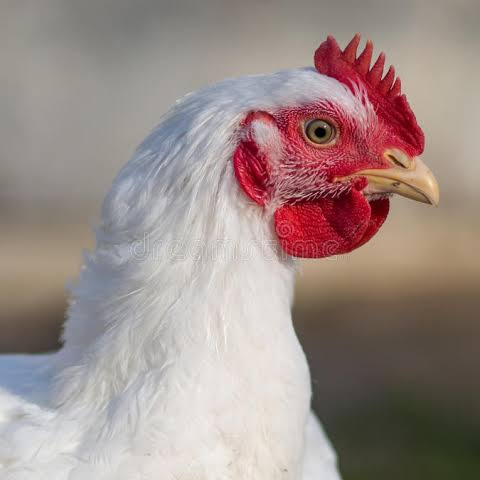

Practical Guide To Starting A Broiler Business From Scratch
First you need a chiken coop which should be a properly ventilated structure. Chicks need fresh air to grow . They usually faint when they lack enough air. Food needed 8 bags in total for 100 chicks Chicken starter mash Chicken starter pellets Chicken grower pellets Chicken grower mash Chicken finisher mash Chicken finisher pellets Vaccination schedule After the first week gumboro. Second week newcastle. Before you order chicks you need [ ] 1. Wood chaffing [ ] Bendable plywood This is needed to make a brooder .A brooder is a structure used to rear chicks. .Inside the chiken coop ,bend the plywood to made a circular structure. .Fill the structure with dry wood chaffings. .buy 5 large plates which will be used to put the chiken food .5 chicken drinker bottle which chicks will drink from Once the above procedures are done. Put the chicks inside the brooder. Fill the plates with food prefarably chick starter mash or chick pellets After 2 or 3 days the wood chaffings will get wet and smelly even change color. This is due to chiken droppings. Too much accumulation of ammonia which is in the dropping can cause harm to the chicks.You will need to clean the coop. Clean the coop regularly. Finances needed for the six weeks chiken will take to grow. 100 chick's 100×90=9000 6weeks to mature 6=8bags 2=4250 3=4060 3=3980 =32620 Boosters =1000 Maranda= 1000 Vaccine =1000 Total =44620 Profit 4480 So 100 chicks 4800 200 chicks 9600 How much feed does 1 chick consume? Starter feed duration?